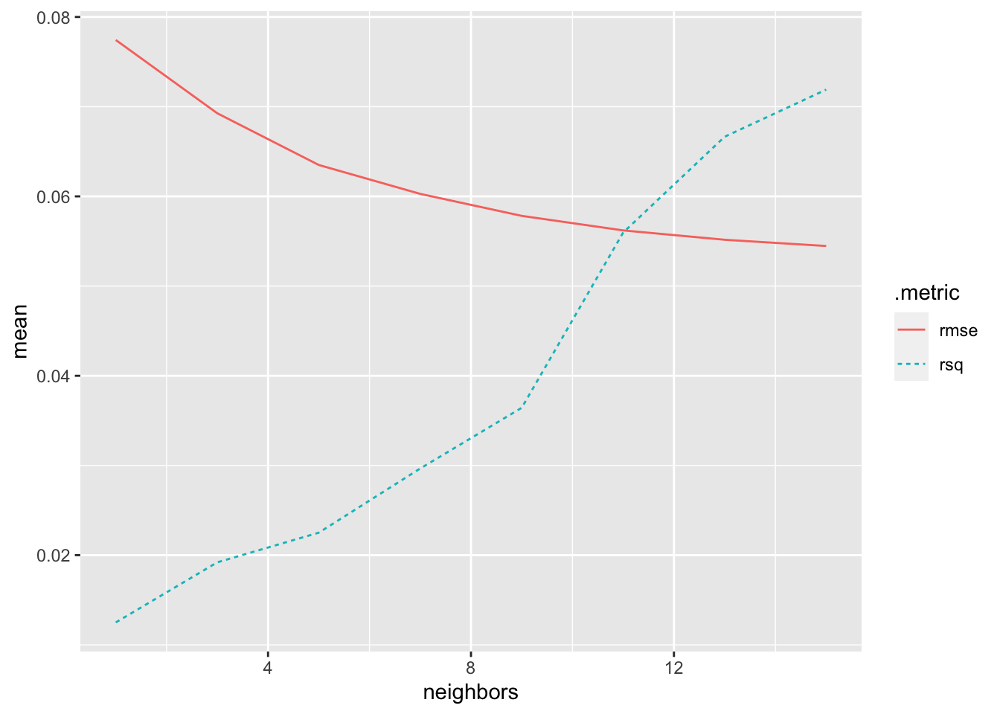
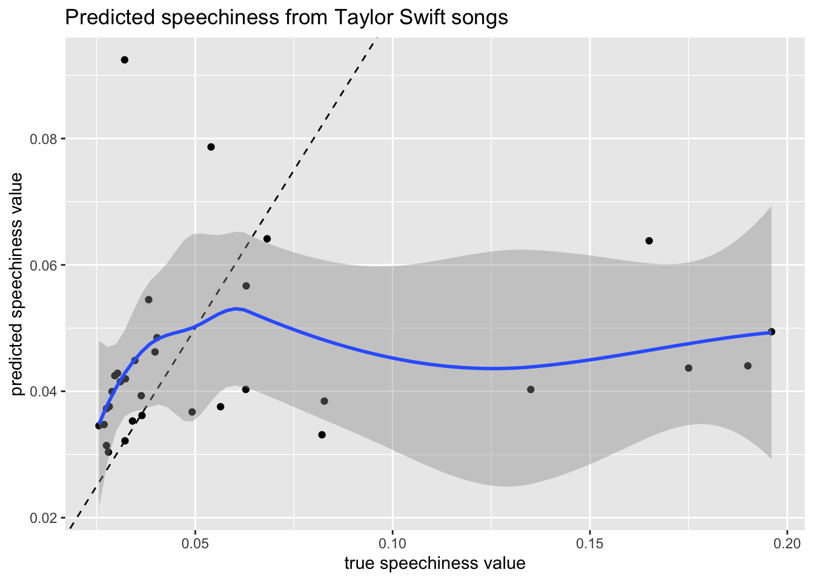

library(tidyverse) # ggplot, lubridate, dplyr, stringr, readr...
library(tidytext)
library(praise)
library(sf)
library(paletteer)
library(tidymodels)Taylor Swift Song Lyrics
ts_songs <- read_csv("taylor_all_songs.csv")
ts_album_songs <- read_csv("taylor_album_songs.csv") |>
mutate(track_name = tolower(track_name)) |>
mutate(track_name = gsub("'", '', track_name, fixed=TRUE)) |>
mutate(track_name = gsub(",", '', track_name, fixed=TRUE)) |>
mutate(track_name = gsub(" (taylors version) [from the vault]", '', track_name, fixed=TRUE)) |>
mutate(track_name = gsub(" (string remix)", '', track_name, fixed=TRUE)) |>
mutate(track_name = gsub(" (piano remix)", '', track_name, fixed=TRUE)) |>
mutate(track_name = gsub(" (pop version)", '', track_name, fixed=TRUE)) |>
mutate(track_name = gsub(" (piano version) [taylors version]", '', track_name, fixed=TRUE)) |>
mutate(track_name = gsub(" (acoustic version) [taylors version]", '', track_name, fixed=TRUE)) |>
mutate(track_name = gsub(" (10 minute version) [taylors version] [from the vault]", '', track_name, fixed=TRUE)) |>
mutate(track_name = gsub(" (taylors version)", '', track_name, fixed=TRUE))
ts_lyrics <- readr::read_csv('https://raw.githubusercontent.com/rfordatascience/tidytuesday/master/data/2020/2020-09-29/taylor_swift_lyrics.csv') |>
janitor::clean_names()There are fewer albums in the taylor_album_songs.csv dataset than in the taylor_all_songs.csv dataset.
ts_songs |>
select(album_name) |>
table()album_name
1989 Beautiful Eyes
16 6
evermore Fearless
17 19
Fearless (Taylor's Version) folklore
26 17
Lover Midnights
18 23
Red Red (Taylor's Version)
22 30
reputation Speak Now
15 17
Taylor Swift The Taylor Swift Holiday Collection
15 6 ts_album_songs |>
select(album_name) |>
table()album_name
1989 evermore
16 17
Fearless (Taylor's Version) folklore
26 17
Lover Midnights
18 23
Red (Taylor's Version) reputation
30 15
Speak Now Taylor Swift
17 15 ts_lyrics |>
select(album) |>
table()album
1989 Fearless folklore Lover Red reputation
15 18 16 18 19 15
Speak Now Taylor Swift
17 14 Lyrics
lyrics_unnest <- ts_lyrics |>
unnest_tokens(lyric_word, lyrics, token = "ngrams", n = 1) |>
group_by(lyric_word) |>
summarize(lyric_count = n()) |>
filter(lyric_count >= 100)
vec_tokens <- c(lyrics_unnest$lyric_word)
temp <- purrr::map(vec_tokens, function(x) str_count(ts_lyrics$lyrics,x))
temp2 <- as.data.frame(do.call(cbind, temp))
names(temp2) <- vec_tokens
full_lyrics <- ts_lyrics |>
cbind(temp2) |>
mutate(num_words = str_count(lyrics, '\\w+')) |>
mutate(title = tolower(title)) |>
mutate(title = gsub("’", '', title, fixed=TRUE)) |>
mutate(title = gsub(",", '', title, fixed=TRUE)) |>
inner_join(ts_album_songs, by = c("title" = "track_name") )
full_lyrics |> head() artist.x album title
1 Taylor Swift Taylor Swift tim mcgraw
2 Taylor Swift Taylor Swift picture to burn
3 Taylor Swift Taylor Swift teardrops on my guitar
4 Taylor Swift Taylor Swift teardrops on my guitar
5 Taylor Swift Taylor Swift a place in this world
6 Taylor Swift Taylor Swift cold as you
lyrics.x
1 He said the way my blue eyes shinx\nPut those Georgia stars to shame that night\nI said: "That's a lie."\nJust a boy in a Chevy truck\nThat had a tendency of gettin' stuck\nOn back roads at night\nAnd I was right there beside him all summer long\nAnd then the time we woke up to find that summer had gone\nBut when you think "Tim McGraw"\nI hope you think my favorite song\nThe one we danced to all night long\nThe moon like a spotlight on the lake\nWhen you think happiness\nI hope you think "that little black dress"\nThink of my head on your chest\nAnd my old faded blue jeans\nWhen you think Tim McGraw\nI hope you think of me\nSeptember saw a month of tears\nAnd thankin' God that you weren't here\nTo see me like that\nBut in a box beneath my bed\nIs a letter that you never read\nFrom three summers back\nIt's hard not to find it all a little bitter sweet\nAnd lookin' back on all of that, it's nice to believe\nBut when you think "Tim McGraw"\nI hope you think my favorite song\nThe one we danced to all night long\nThe moon like a spotlight on the lake\nWhen you think happiness\nI hope you think "that little black dress"\nThink of my head on your chest\nAnd my old faded blue jeans\nWhen you think Tim McGraw\nI hope you think of me\nAnd I'm back for the first time since then\nI'm standin' on your street\nAnd there's a letter left on your doorstep\nAnd the first thing that you'll read\nIs when you think "Tim McGraw"\nI hope you think my favorite song\nSomeday you'll turn your radio on\nI hope it takes you back to that place\nWhen you think happiness\nI hope you think "that little black dress"\nThink of my head on your chest\nAnd my old faded blue jeans\nWhen you think Tim McGraw\nI hope you think of me\nOh, think of me\nMmm\nYou said the way my blue eyes shined\nPut those Georgia stars to shame that night\nI said, "That's a lie."\n
2 State the obvious, I didn't get my perfect fantasy\nI realize you love yourself more than you could ever love me\nSo go and tell your friends that I'm obsessive and crazy\nThat's fine, you won't mind if I say\nBy the way\nI hate that stupid old pickup truck you never let me drive\nYou're a redneck heartbreak who's really bad at lying\nSo watch me strike a match on all my wasted time\nAs far as I'm concerned, you're just another picture to burn\nThere's no time for tears\nI'm just sitting here planning my revenge\nThere's nothing stopping me\nFrom going out with all of your best friends\nAnd if you come around saying sorry to me\nMy daddy's gonna show you how sorry you'll be\n'Cause I hate that stupid old pickup truck you never let me drive\nYou're a redneck heartbreak who's really bad at lying\nSo watch me strike a match on all my wasted time\nAs far as I'm concerned, you're just another picture to burn\nAnd if you're missing me, you'd better keep it to yourself\n'Cause coming back around here would be bad for your health\n'Cause I hate that stupid old pickup truck you never let me drive\nYou're a redneck heartbreak who's really bad at lying\nSo watch me strike a match on all my wasted time\nIn case you haven't heard\nI really, really hate that\nStupid old pickup truck you never let me drive\nYou're a redneck heartbreak, who's really bad at lying\nSo watch me strike a match on all my wasted time\nAs far as I'm concerned, you're just another picture to burn\nBurn, burn, burn, baby, burn\nYou're just another picture to burn\nBaby, burn\n
3 Drew looks at me,\nI fake a smile so he won't see,\nWhat I want, what I need,\nAnd everything that we should be,\nI'll bet she's beautiful,\nThat girl he talks about,\nAnd she's got everything that I've had to live without,\nDrew talks to me,\nAndI laugh 'cause it's just so funny,\nThat I can't even see\nAnyone when he's with me,\nHe says he's so in love,\nHe's finally got it right,\nI wonder if he knows he's all I think about at night,\nHe's the reason for the teardrops on my guitar,\nThe only thing that keeps me wishing on a wishing star,\nHe's the song in the car I keep singing, don't know why I do\nDrew walks by me,\nCan he tell that I can't breathe?\nAnd there he goes so perfectly,\nThe kind of flawless I wish I could be,\nShe better hold him tight,\nGive him all her love,\nLook in those beautiful eyes,\nAnd know she's lucky 'cause,\nHe's the reason for the teardrops on my guitar,\nThe only thing that keeps me wishing on a wishing star,\nHe's the song in the car I keep singing, don't know why I do\nSo I'll drive home alone,\nAs I turn out the light,\nI'll put his picture down,\nAnd maybe get some sleep tonight,\nHe's the reason for the teardrops on my guitar,\nThe only one who's got enough of me to break my heart,\nHe's the song in the car I keep singing, don't know why I do\nHe's the time taken up,\nBut there's never enough,\nAnd he's all the I need to fall into,\nDrew looks at me,\nI fake a smile so he won't see.\n
4 Drew looks at me,\nI fake a smile so he won't see,\nWhat I want, what I need,\nAnd everything that we should be,\nI'll bet she's beautiful,\nThat girl he talks about,\nAnd she's got everything that I've had to live without,\nDrew talks to me,\nAndI laugh 'cause it's just so funny,\nThat I can't even see\nAnyone when he's with me,\nHe says he's so in love,\nHe's finally got it right,\nI wonder if he knows he's all I think about at night,\nHe's the reason for the teardrops on my guitar,\nThe only thing that keeps me wishing on a wishing star,\nHe's the song in the car I keep singing, don't know why I do\nDrew walks by me,\nCan he tell that I can't breathe?\nAnd there he goes so perfectly,\nThe kind of flawless I wish I could be,\nShe better hold him tight,\nGive him all her love,\nLook in those beautiful eyes,\nAnd know she's lucky 'cause,\nHe's the reason for the teardrops on my guitar,\nThe only thing that keeps me wishing on a wishing star,\nHe's the song in the car I keep singing, don't know why I do\nSo I'll drive home alone,\nAs I turn out the light,\nI'll put his picture down,\nAnd maybe get some sleep tonight,\nHe's the reason for the teardrops on my guitar,\nThe only one who's got enough of me to break my heart,\nHe's the song in the car I keep singing, don't know why I do\nHe's the time taken up,\nBut there's never enough,\nAnd he's all the I need to fall into,\nDrew looks at me,\nI fake a smile so he won't see.\n
5 I don't know what I want, so don't ask me\n'Cause I'm still trying to figure it out\nDon't know what's down this road\nI'm just walking\nTrying to see through the rain coming down\nEven though I'm not the only one, who feels\nThe way I do\nI'm alone, on my own\nAnd that's all I know,\nI'll be strong, I'll be wrong\nOh, but life goes on\nOh, I'm just a girl\nTrying to find a place in this world\nGot the radio on, my old blue jeans\nAnd I'm wearing my heart on my sleeve\nFeeling lucky today, got the sunshine\nCould you tell me what more do I need?\nAnd tomorrow's just a mystery, oh yeah\nBut that's okay\nI'm alone, on my own\nAnd that's all I know,\nI'll be strong, I'll be wrong\nOh, but life goes on\nOh, I'm just a girl\nTrying to find a place in this world\nMaybe I'm just a girl on a mission\nBut I'm ready to fly\nI'm alone, on my own\nAnd that's all I know\nOh, I'll be strong, I'll be wrong\nOh, but life goes on\nOh, I'm alone, on my own\nAnd that's all I know\nOh, I'm just a girl\nTrying to find a place in this world\nOh, I'm just a girl\nOh, I'm just a girl, oh, oh\nOh, I'm just a girl\n
6 You have a way of coming easily to me\nAnd when you take, you take the very best of me\nSo I start a fight 'cause I need to feel somethin'\nAnd you do what you want 'cause I'm not what you wanted\nOh, what a shame\nWhat a rainy ending given to a perfect day\nJust walk away\nAin't no use defending words that you will never say\nAnd now that I'm sittin' here thinkin' it through\nI've never been anywhere cold as you\nYou put up the walls and paint them all a shade of gray\nAnd I stood there loving you, and wished them all away\nAnd you come away with a great little story\nOf a mess of a dreamer with the nerve to adore you\nOh, what a shame\nWhat a rainy ending given to a perfect day\nJust walk away\nAin't no use defending words that you will never say\nAnd now that I'm sittin' here thinkin' it through\nI've never been anywhere cold as you\nYou never did give a damn thing, honey\nBut I cried, cried for you\nAnd I know you wouldn't have told nobody if I died, died for you\nDied for you\nOh, what a shame\nWhat a rainy ending given to a perfect day\nOh, every smile you fake is so condescending\nCountin' all the scars you've made\nNow that I'm sittin' here thinkin' it through\nI've never been anywhere cold as you\n
a all and are at baby back be been but can can't cause come could do don't
1 94 5 1 0 17 0 5 5 0 0 0 0 0 0 0 1 0
2 95 11 2 0 23 1 1 4 0 0 0 0 0 1 1 0 0
3 60 5 0 0 13 0 0 7 0 0 2 2 2 0 1 7 3
4 60 5 0 0 13 0 0 7 0 0 2 2 2 0 1 7 3
5 47 4 0 0 8 0 0 7 0 3 0 0 0 0 0 6 2
6 83 4 2 0 14 0 0 4 3 0 0 0 2 1 0 2 0
down ever for get go got had have he here how i i'd i'll i'm if in is it
1 0 1 1 1 1 0 2 0 32 3 0 82 0 0 0 0 37 0 11
2 0 5 2 1 3 0 0 1 16 4 2 52 0 0 0 3 14 1 3
3 1 3 3 1 4 3 1 0 39 2 0 54 0 0 0 3 23 6 7
4 1 3 3 1 4 3 1 0 39 2 0 54 0 0 0 3 23 6 7
5 2 0 0 0 4 1 0 0 6 0 0 37 0 0 0 3 17 5 1
6 0 7 3 0 0 0 1 2 15 7 0 53 0 0 0 1 26 2 9
it's just know like look love me my never no not now of oh on one ooh out
1 1 0 0 3 1 0 13 12 1 1 1 0 10 0 21 3 0 0
2 0 5 0 0 0 2 18 6 4 6 5 0 1 0 9 0 0 1
3 1 1 5 0 2 2 11 4 1 7 0 5 2 0 24 3 0 4
4 1 1 5 0 2 2 11 4 1 7 0 5 2 0 24 3 0 4
5 0 9 6 0 0 0 2 8 0 7 1 6 0 3 26 5 0 1
6 0 0 1 0 0 0 9 0 6 7 1 3 4 0 2 1 0 0
right said say see so stay take that the there they think this time to up
1 1 4 0 1 3 0 1 12 11 2 0 19 0 2 8 1
2 0 0 2 0 2 0 0 5 6 0 0 0 0 5 7 8
3 1 0 1 3 12 0 1 5 18 2 0 1 0 1 6 1
4 1 0 1 3 12 0 1 5 18 2 0 1 0 1 6 1
5 0 0 0 1 1 0 0 5 4 0 0 0 4 0 8 0
6 0 0 2 0 2 0 2 5 7 1 0 3 0 0 9 1
wanna want was we were what when wish with would yeah you you're your
1 0 0 1 5 1 0 3 0 0 0 0 29 0 6
2 0 0 4 0 0 0 0 0 1 1 0 21 4 5
3 0 1 0 1 0 1 1 5 2 0 0 0 0 0
4 0 1 0 1 0 1 1 5 2 0 0 0 0 0
5 0 1 0 1 0 3 0 0 0 0 1 1 0 0
6 0 2 0 0 0 5 1 1 2 1 0 19 0 0
num_words album_name ep album_release track_number artist.y
1 380 Taylor Swift FALSE 2006-10-24 1 Taylor Swift
2 318 Taylor Swift FALSE 2006-10-24 2 Taylor Swift
3 317 Taylor Swift FALSE 2006-10-24 3 Taylor Swift
4 317 Taylor Swift FALSE 2006-10-24 15 Taylor Swift
5 265 Taylor Swift FALSE 2006-10-24 4 Taylor Swift
6 256 Taylor Swift FALSE 2006-10-24 5 Taylor Swift
featuring bonus_track promotional_release single_release track_release
1 <NA> FALSE <NA> 2006-06-19 2006-06-19
2 <NA> FALSE <NA> 2008-02-03 2006-10-24
3 <NA> FALSE <NA> 2007-02-19 2006-10-24
4 <NA> TRUE <NA> <NA> 2008-03-18
5 <NA> FALSE <NA> <NA> 2006-10-24
6 <NA> FALSE <NA> <NA> 2006-10-24
danceability energy key loudness mode speechiness acousticness
1 0.580 0.491 0 -6.462 1 0.0251 0.5750
2 0.658 0.877 7 -2.098 1 0.0323 0.1730
3 0.621 0.417 10 -6.941 1 0.0231 0.2880
4 0.459 0.753 10 -3.827 1 0.0537 0.0402
5 0.576 0.777 9 -2.881 1 0.0324 0.0510
6 0.418 0.482 5 -5.769 1 0.0266 0.2170
instrumentalness liveness valence tempo time_signature duration_ms explicit
1 0 0.1210 0.425 76.009 4 232107 FALSE
2 0 0.0962 0.821 105.586 4 173067 FALSE
3 0 0.1190 0.289 99.953 4 203040 FALSE
4 0 0.0863 0.483 199.997 4 179067 FALSE
5 0 0.3200 0.428 115.028 4 199200 FALSE
6 0 0.1230 0.261 175.558 4 239013 FALSE
key_name mode_name key_mode lyrics.y
1 C major C major NA
2 G major G major NA
3 A# major A# major NA
4 A# major A# major NA
5 A major A major NA
6 F major F major NAPredicting speechiness using \(k\) nearest neighbors
lyrics <- full_lyrics |>
select(a:your, num_words, danceability:tempo)
set.seed(47)
lyrics_split <- initial_split(lyrics)
lyrics_train <- training(lyrics_split)
lyrics_test <- testing(lyrics_split)
lyrics_vfold <- vfold_cv(lyrics_train,
v = 3)
k_grid <- data.frame(neighbors = seq(1,15, by = 2))ts_recipe <-
recipe(speechiness ~ .,
data = lyrics_train)
ts_knn_tune <- nearest_neighbor(neighbors = tune()) |>
set_engine("kknn") |>
set_mode("regression")
ts_wflow_tune <- workflow() |>
add_model(ts_knn_tune) |>
add_recipe(ts_recipe)
ts_wflow_tune |>
tune_grid(resamples = lyrics_vfold,
grid = k_grid) |>
collect_metrics() |>
#filter(.metric == "rsq") |>
ggplot(aes(x = neighbors, y = mean, group = .metric, color = .metric)) +
geom_line(aes(linetype = .metric))

The metrics tells us that 15 neighbors should be used to predict the speechiness of the songs.
ts_knn <- nearest_neighbor(neighbors = 15) |>
set_engine("kknn") |>
set_mode("regression")
ts_wflow <- workflow() |>
add_model(ts_knn) |>
add_recipe(ts_recipe)
ts_fit <- ts_wflow |>
fit(data = lyrics_train)How well is the test data predicted?
ts_fit |>
predict(new_data = lyrics_test) |>
cbind(lyrics_test) |>
ggplot(aes(x = speechiness, y = .pred)) +
geom_point() +
geom_abline(intercept = 0, slope = 1, linetype = 2) +
geom_smooth(method = "loess") +
labs(x = "true speechiness value",
y = "predicted speechiness value",
title = "Predicted speechiness from Taylor Swift songs")
praise()[1] "You are extraordinary!"